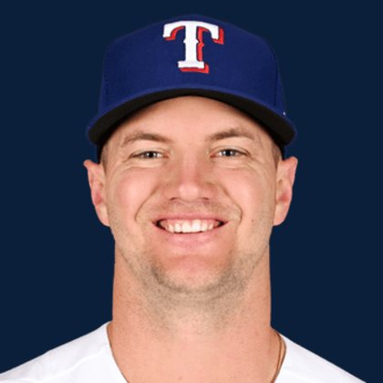

BASEBALLKEEP
Dynasty · Redraft · Diamond
Player File · 3B TEX

Josh Jung
#6 · 3B · Texas Rangers · age 28 · B/T RR · 6' 1" / 214 lbs · MLB debut 2022 · San Antonio, USA
Keep avg132.86
# Boards14
BK Value544
Spread122–142
Hitting
| Year | G | AB | R | H | 2B | HR | RBI | SB | BB | SO | AVG | OBP | SLG | OPS |
|---|---|---|---|---|---|---|---|---|---|---|---|---|---|---|
| 2026 | 92 | 354 | 46 | 104 | 23 | 9 | 35 | 1 | 33 | 71 | .294 | .361 | .441 | .802 |
| 2025 | 131 | 482 | 53 | 121 | 23 | 14 | 61 | 4 | 27 | 129 | .251 | .294 | .390 | .684 |
The Keep#135BK 544
The Lineup#97BK 1,081
Redraft#135BK 544
Every Board
Spread 122–142 · 14 sources
| Source | Rank |
|---|---|
| RotoWire | 122 |
| FanGraphs The Board | 122 |
| TDG Points | 125 |
| CBS Sports | 132 |
| Ottoneu | 133 |
| Dynasty League Baseball | 133 |
| FantasyPros Dynasty ECR | 134 |
| ESPN | 134 |
| NFBC ADP | 134 |
| ATC ROS | 134 |
| Razzball | 135 |
| Baseball Prospectus | 140 |
| The Dynasty Dugout | 140 |
| Pitcher List | 142 |
On The Keep nearby — William Contreras (#133) · Henry Bolte (#134) · Bryce Rainer (#136) · Luis García Jr. (#137)
All players · The Keep · The Lineup · Pitchers · Calculator